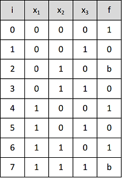
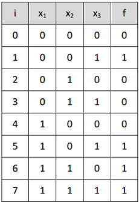

Prekidačka funkcija f(x1,x2,x3) zadata je skupovima indeksa
f(1)={0,4,6} i f(b)={2,7}.
Konstruisati kombinacionu tablicu te funkcije.
REŠENJE:
f(1)={0, 4, 6} - su indeksi vektora na kojima funkcija f ima vrednost 1;
f(b)={2, 7} - su indeksi vektora na kojima funkcija f nije definisana.
f(1) U f(0) U f(b) = {0,1}n

Imamo 2n ulaza u tablicu (n=3)
PITANJE: Koliki je broj potpuno definisanih prekidačkih funkcija od n promenljivih?
ODGOVOR:
2n ulaza u
kombinacionu tablicu za n promenljivih.
Funkcija f uzima vrednost iz {0,1} => 2 vrednosti.
Broj varijacija sa ponavljanjem 2 elementa, klase 2n je
22n
Prekidačku funkciju f(x1,x2,x3), definisanu na svim vektorima
i zadatu skupom indeksa f(1)={1,5,6,7}
napisati u obliku SDNF i SKNF.
REŠENJE:
Prekidačka funkcija koja zavisi od tri promenljive k1 , k2 k3 i ima
23= 8 različitih vektora na kojima je definisana.
Kako je u zadatku rečeno da je funkcija definisana na svim vektorima ,
to znači da na vektorima na kojima nema vrednost 1 ,ima vrednost 0 .
Na osnovu toga možemo predstaviti ovu funkciju tablicom
sa svim vektorima na kojima je definisana i vrednostima
funkcije na odgovarajućim vektorima .

Na osnovu vektora na kojima funkcija ima vrednost jedan f (1) = { 1,5,6,7 }
formiramo SDNF , tako što za svaki vektor na kome funkcija ima vrednost jedan,
pišemo potpuni proizvod koji odgovara tom vektoru ,
a zatim pravimo sumu tako formiranih potpunih proizvoda .
SDNF: f= ¬x1¬x2x3+x1¬x2x3+x1x2¬x3+x1x2x3
Na osnovu vektora na kojima funkcija ima vrednost jedan f (0) = { 0,2,3,4 }
formiramo SKNF , tako što za svaki vektor na kome funkcija ima vrednost nula,
pišemo potpuni sumu koja odgovara tom vektoru ,
a zatim pravimo proizvod tako formiranih potpunih suma .
SDNF: f= (x1+x2+x3)(x1+¬x2+x3)(x1+¬x2+¬x3)(¬x1+x2+x3)